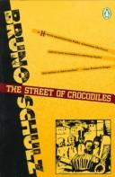
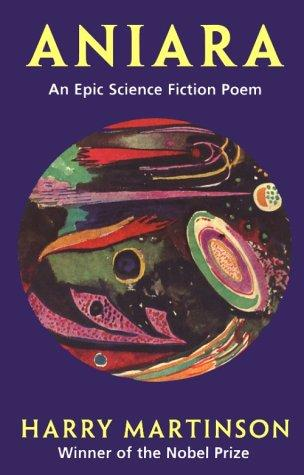
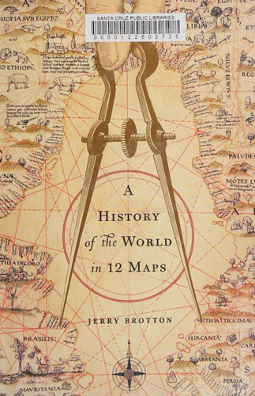
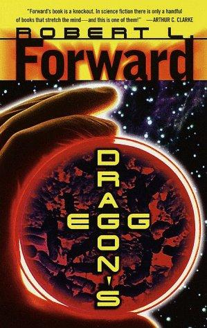
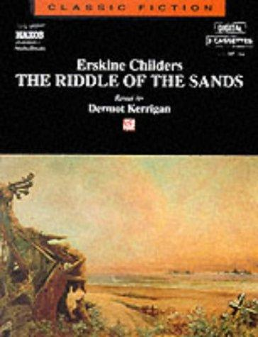
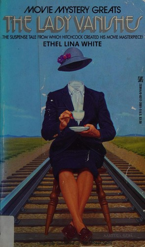

Recommendations for the week of 2 November 2026.
This week rotates three fresh highbrow edges, none of them last week's: the translated-fiction thread reaches Poland for the first time with Schulz's hallucinatory, matter-is-alive modernism; the poetry edge lands on a Swedish verse epic that doubles as literary SF — a refugee ship falling forever into the dark; and the narrative-nonfiction edge opens the history of cartography, reading twelve maps as arguments about power and knowledge rather than neutral pictures. The comfort picks hold the three best-loved veins — big-idea hard SF, cold-weather espionage, Golden-Age crime — while reaching for fresh authors and clean structural hooks: a civilisation living a million times faster on a neutron star, the foundational spy novel of charts and tides, and a vanishing-passenger puzzle about evidence and denial.





